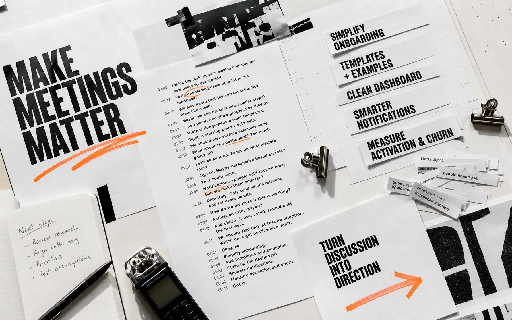

Meetings contain work.
Draft makes it editable.
Trace every proposed task back to the sentence that created it. Edit the meaning. Confirm the owner. Then move it to the backlog.
Recording a meeting is easy.
Understanding what it committed the team to is the work.
One conversation contains different kinds of work.
A sentence can be a decision, a commitment, an open question, or only context. Draft keeps those distinctions visible before anything becomes a task.
DECISIONwe will change directionCOMMITMENTsomeone promised an actionQUESTIONevidence is still missingCONTEXTuseful, but not backlog work
Edit the meeting before it edits the roadmap.
This is a local interaction with a fictional product call. Pick a highlighted source line, inspect the suggestion, then change its state.
Product call / sample transcript
Onboarding review
Synthetic demo
The source survives every cut.
Confirmed work never loses the line, speaker, timestamp, and reviewer action that produced it.
Not everything deserves a ticket.
A choice the team made. Preserve rationale and date.
Decision logAn action someone agreed to own. Confirm person and timing.
Backlog draftA gap that blocks confidence. Route to research or discovery.
Research queueSupporting language that should remain searchable, not actionable.
Transcript onlyAn owner is a confirmation, not a guess.
Draft can propose a name heard in the conversation. The reviewer verifies responsibility before the item crosses into confirmed work.
PROPOSEDOwner: Maya?mentioned near source 00:37
REVIEWER ACTIONConfirm / change / leave unassignedno silent assignment
CONFIRMEDOwner: Mayareviewed locally
One source. Different editorial destinations.
The destination changes the fields that need review. A decision log needs rationale; a backlog draft needs ownership; a research question needs a learning goal.
Simplify first-run setup
Rationale and source preserved.
Build example-first onboarding
Owner and acceptance notes required.
Why do new teams arrive without an example?
Question stays open, not disguised as work.
A meeting is not a task list.
Draft proposes structure, but the team owns the meaning. The system is designed around three editorial moves.
Keep the exact source in view.
A suggestion without its sentence is just another confident summary. Timestamps and surrounding language stay attached.
Separate decisions from possibilities.
Decisions, commitments, and questions need different treatment. Draft makes that distinction visible and editable.
Make accountability a human action.
Nothing reaches the confirmed rail until a person checks the title, owner, output, and source.
Review changes with the room.
Different roles protect different parts of meaning. The product manager checks intent, engineering checks feasibility, and the facilitator checks whether the sentence was actually settled.
- PRODUCTIs this the decision we meant?
- ENGINEERINGIs the commitment feasible and owned?
- FACILITATORWas this agreed, proposed, or left open?
Confidence can be a bug.
The title sounds cleaner than the conversation. Keep the source and surrounding lines visible.
Uncertainty is mistaken for commitment. Classify first, then choose the output.
A mentioned name becomes responsibility. Require explicit human confirmation.
A concept with the edges left visible.
This portfolio prototype demonstrates the review model. It does not pretend that unresolved product questions are finished features.
Demonstrated hereRequires validation
Source-linked synthetic transcriptRecording consent and participant notice
Editable suggestion statesAccuracy, languages, and edge cases
Local confirmed backlog railLive imports, exports, and integrations
Keyboard and responsive behaviorRetention, permissions, and security policy
Prepare the handoff. Don’t fake the integration.
The concept can format reviewed work for copying or future export. It does not claim a connected backlog tool.
TITLEBuild example-first onboarding
OWNERMaya
SOURCEOnboarding review · 00:37
Local clipboard action only.
Keep the context.
Cut the noise.
Leave a test email to see the local prototype response. Nothing is sent or stored.